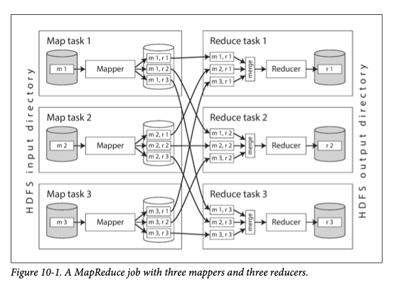
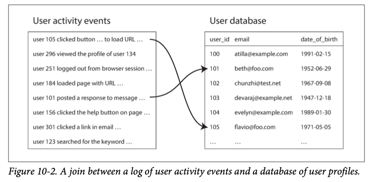
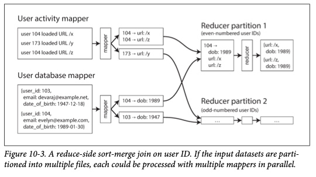

Chapter 10
A system cannot be successful if it is too strongly influenced by a single person. Once the initial design is complete and fairly robust, the real test begins as people with many different viewpoints undertake their own experiments. —Donald Knuth
Web made request/response style of interaction so common where people forget there are other ways to interact with the system. There are 3 types of systems: Services (online systems) A service waits for a request from a client to arrive. When it receive a request, it tries to handle it as soon as possible and sends a response back. Batch processing systems (offline systems) A batch processing system takes a large amount of input data, runs a job to process it, and produces some output data. (few minutes to several days) Stream processing systems (near-real-time systems) Somewhere between online and offline/batch processing. Like batch processing, stream takes input and produces output, but stream job operates on events.
MapReduce provides a clear picture of why and how batch processing is useful. Batch processing is very old form of computing. Punch card tabulating machines implemented a semi-mechanized form of batch processing to compute aggregate statistics from large inputs.
Batch Processing with Unix Tools¶
Main idea of unix tools is that it is able to pipe current program's output into next program's input. This way we can start simple log analysis
Simple log analysis¶
download sample log from NASA by
curl "ftp://ita.ee.lbl.gov/traces/NASA_access_log_Jul95.gz" > NASA.gz
gunzip NASA.gz
cat NASA | awk '{print $2}' | sort | uniq -c | sort -r -n | head -n 5
17572 piweba3y.prodigy.com
11591 piweba4y.prodigy.com
9868 piweba1y.prodigy.com
7852 alyssa.prodigy.com
7573 siltb10.orl.mmc.com
This case you just finished a data pipeline from unix tool
Similar logic can be applied by using a programing language
counts = Hash.new(0)
File.open('./NASA') do |file|
file.each do |line|
url = line.split[6]
counts[url] += 1
end
end
top5 = counts.map{|url, count| [count, url] }.sort.reverse[0...5]
top5.each{|count, url| puts "#{count} #{url}" }
Sorting versus in-memory aggregation¶
Although the logic is similar in both way of processing log. Main difference is execution flow. If your working set (size of your data), is small to fit in memory, then programming language way might be sufficient because all data can be stored in memory. However, if your working set is larger than memory available (let's say 1TB log file need to be processed). Then unix tool approach is better. Because sort utility in GNU Coreutils (Linux) automatically handles larger-than- memory datasets by spilling to disk, and automatically parallelizes sorting across multiple CPU cores.
Martin spent lot of effort explaining unix philosophy which simply comes down to every program should do one thing well. And Unix use uniform interface, i.e. everything is a file to decouple program and it's input/output. This way program can be composed together in a way their designer could never think of.
This philosophy is very similar to Agile/Devops practice today
MapReduce and Distributed Filesystems¶
MapReduce is just like unix tools that build for processing data.
Main two function you need to implement is mapper and reducer. Where mapper is like awk '{print $2}' where it extract from input and map it to a key-value pair. sort or uniq -c will be your reducer where it process the input and output to somewhere.
Main difference between MapReduce and unix tool is MapReduce job can be deployed to multiple machines where unix tool usually work on a single machine.
Main idea is still partition, where each input is typically a directory in HDFS and each file or file block within the input directory is considered to be a separate partition that can be processed by a separate map task
MapReduce scheduler tries run each mapper on one of the machines that stores a replica of the input file thus saving network load. Reducer side is also partitioned, the number of reduce tasks is configured by job author. same as Chapter 6#Partitioning by Hash of Key

Because MapReduce job's outputs are write into a directory in HDFS, chained MapReduce jobs are therefore less like pipelines of Unix commands (which pass the output of one process as input to another process directly, using only a small in-memory buffer)
Chained MapReduce jobs can sometimes hard to read so higher level tools have been developed to help with that Such as Hadoop, such as Pig [30], Hive [31], Cascading [32], Crunch [33], and FlumeJava [34], also set up workflows of multiple MapReduce stages that are automatically wired together appropriately.
Reduce Side Joins and Grouping¶
This section goes deeper into how JOIN operator was implemented. In most dataset, data have relation to each other. A foreign key in relational model, a document reference in document model, or edge in a graph model
Those can be used as index to look stuff up then performing joins. When MapReduce job given set of files as input, it will scan the entire file and this is called full table scan in database terms because MapReduce has no concept of index
When we talk about joins in the context of batch processing, we mean resolving all occurrences of some association within a dataset. For example

left is things that logged in user did on a website, right is database of users. This is like Chapter 3#Stars and Snowflake schema where left is the fact table, and right is one of the dimensions
Since fact table can be very large, in order to achieve good throughput in batch process, it is better to bring user table into same distributed filesystem as log of user activities.
Sort merge joins¶
Mapper is basically to extract a key and value from each input record. In this example, mapper will extract key (user ID) and particular event (url or dob). Reducer can be partitioned into odd or even number (2 partition in total)  when MapReduce partitions the mapper output by key and then sorts the kv pairs, the effect is that all the activity events and the user record with same user ID become adjacent to each other in reducer input
after sorting, join logic become easy: the reducer function is called once for every user ID, and first value will be dob from user db. Reducer iterates over activity events with the same user ID, outputting viewed-url and viewer-age-in-years pair
Subsequent MapReduce job can calculate the distribution of viewer ages for each URL
This algorithm is called sort merge join because mapper output is sorted by key and reducer can process all of the records for a particular user ID in one go. (output that result and merge it together)
GROUP BY¶
Besides joins, another common use of bring related data to same place is grouping records by some key (GROUP BY clause in SQL) and perform some kind of aggregation
- counting
- adding up particular field
- pick top k record
Another common use for grouping is sessionization where such analysis could be used to work out whether users who were shown a new version of your website are more likely to make a purchase than those who used old version (A/B testing)
hot keys are those celebrities on social network website. Collecting all activity related to a celebrity can lead to skew (aka hot spots) that is, one reducer are processing significantly more records than the others
There are method like sampling to determine which keys are hot. Other approach like sharded join (predetermined hot spot).
Map Side Joins¶
Previous section talked about join logic on reducers. You don't need to make any assumption about the input data on reducer side join. However, the downside is that all that sorting, copying to reducers, and merging of reducer inputs can be expensive.
On the other hand, if you can determine your input data format, it is possible to make joins faster by using map side join. Each mapper read from distributed file system and output to file system
Broadcast hash joins¶
the word broadcast reflects the fact that each mapper for a partition of the large input reads the entirety of the small input (so small input is "broadcast" to all partitions of the large input) and this small dataset is loaded into memory
Partitioned hash joins¶
partition and map to same way. For example, arrange activity events and user database to each be partitioned based on last decimal digit of user ID. (10 partition in total). Mapper. 3 first loads all users with ID ending in 3 into hash table, then scans over all activity events for each user whose ID ends in 3
Map side merge joins¶
On top of partitioned in the same way, we can also sort the key. In this case, it does not matter whether the inputs are small enough to fit in memory, because mapper can perform same merging operation that would be done by reducer.
This usually mean there is previous map reduce job that partition and sort the key already.
The Output of Batch Workflows¶
Compare to OLTP where generally look up small number of records by key, analysis workload scan over a large number of records. Performing groupings and aggregations and output is often some form of report: a graph showing the change in a metric over time, top 10 items according to some ranking. The consumer of such a report is often an analyst or manager who make business decisions. Below are different use cases
Building search indexes¶
MapReduce was used for building index for search engine in Google. If we need to perform full text search over a fixed set of documents, then batch process is a very effective way of building indexes: mappers partition the set of document as needed. Each reducer builds index for its partition, and index file are written to distributed file system
KV stores as batch process output¶
Another common output from batch processing is to build machine learning systems such as classifiers (e.g. spam filters, anomaly detection, image recognition) and recommendation systems (e.g. people you may know, products you may be interested in, or related searches)
The output of those jobs are some kind of database: for example, a database that can be queried by user ID to obtain suggested friends for that user.
These database can be files from batch jobs and read only. Since mapper usually sort key and map them together
Philosophy of batch process¶
Since input is left unchanged, we can experiment with it very easily. (no side effects) - If you introduce a bug into the code and the output is wrong or corrupted, you can simply roll back to a previous version of the code and rerun the job, and the output will be correct again. - As a consequence of this ease of rolling back, feature development can proceed more quickly than in an environment where mistakes could mean irreversible damage. - If a map or reduce task fails, the MapReduce framework automatically re- schedules it and runs it again on the same input. - Like Unix tools, MapReduce jobs separate logic from wiring (configuring the input and output directories), which provides a separation of concerns and enables potential reuse of code
Comparing Hadoop to Distributed Databases¶
Hadoop is like a distributed version of Unix tools. Massively parallel processing databases have been explored this idea previously. (such as Teradata, NonStop SQL)
The main difference is MPP databases focus on parallel execution analytic SQL queries where combination of MapReduce and distributed filesystem provide something more like a general purpose OS that can run arbitrary programs
Database requires you to define schema but filesystem does not. they can equally well be text, images, videos, sensor readings, sparse matrices, feature vectors, genome sequences, or any other kind of data.
Hadoop enable dumping data into HDFS and figuring out later how to process it. While MPP databases need careful up-front modeling
The idea is similar to data warehouse. And this data dumping shifts the burden of interpreting the data from producer to consumer (the interpretation of the data)
This can be advantage if producer and consumer of the data are in different teams.
Hadoop has been used for ETL process. Data is dumped into distributed filesystem in raw form. MapReduce jobs transform it into a relational form and import it into an MPP data warehouse for analytic purposes.
Diversity of processing models¶
MPP databases are monolithic and tightly integrated software that take care of storage layout on disk, query planning, scheduling, and execution. The system can achieve very good performance on the types of queries that it is designed for. On top of that, SQL allows graphical tools used by business analysts (such as Tableau)
But not all kinds of processing can be sensibly expressed as SQL queries. If you are building recommendation systems, or full text search indexes with relevance ranking models, or performing image analysis. You most likely need a more general model of data processing. These kinds of processing are often very specific to particular application (e.g. feature engineering for machine learning, natural language models for machine translation, risk estimation functions for fraud prediction). Those inevitably require writing code, not just queries
MapReduce gave engineers the ability to easily run their own code over large data sets. You can build SQL query execution engine on top of HDFS and MapReduce. (Hive)
Various processing models can be run on a single cluster machine, all access the same files on the distributed file system. Hadoop ecosystem include OLTP databases such as HBase and MPP style databases such as Impala. Neither of them use MapReduce, but both use HDFS for storage. This way they can be integrated in the same system
Fault tolerance¶
Batch process system tolerate fault better than online system does. If node crash when executing a query, MPP usually abort the entire process. MapReduce can tolerate failure of a map or reduce task without affecting the whole job by retrying work at the granularity of an individual task.
The MapReduce approach is more appropriate for larger jobs where so much data and the job would run a long time that they are likely experience at least one task failure along the way.
Beyond MapReduce¶
MapReduce is just one of programming models in distributed systems. Depending on the volume of data, the structure of the data and the type of processing being done with it, other tools may be more appropriate for expressing a computation
MapReduce is a useful learning tool. Concept are simple to understand (but hard to implement) That is why higher-level programming models (Pig, Hive, Cascading, Crunch) were created as abstractions on top of MapReduce.
Rest of this chapter will explore alternatives for batch processing
Materialization of Intermediate State¶
In many case you know the output of one job is used as input to another job, which is maintained by the same team. In this case, the files on the distributed system is called intermediate state. In the complex workflows used to build recommendation systems there is a lot of such intermediate state (50 or 100 MapReduce jobs)
The process of writing out this intermediate state to files is called materialization. (basically write to some storage)
The log analysis example in the beginning used Unix pipes do not fully materialize the intermediate state, but instead stream the output to the input incrementally using a small in memory buffer.
MapReduce's approach of fully materializing intermediate state has downsides compare to Unix pipes: - job can only start when all tasks in the preceding jobs have completed. - Storing intermediate state in distributed filesystem means those files are replicated across several nodes, which is overkill for such temporary data.
Dataflow engines¶
In order to fix these problems with MapReduce, several new execution engines were developed. Most well known are Spark, Tez, and Flink. They have one thing in common: they handle an entire workflow as one job, rather breaking it up into independent subjobs.
They explicitly model the flow of data through several processing stages. So they are called dataflow engines. Like MapReduce, they work by repeatedly calling a user-defined function (UDF) to process one record at a time on a single thread. They parallelize work by partitioning inputs, and copy output of one function over the network to become the input to another function
Unlike in MapReduce, these functions need not take the strict roles of alternating map and reduce, but instead can be assembled in more flexible ways. They are called operators. And the dataflow engine provides several different options for connecting one operator's output to another's input - One option is to repartition and sort records by key, This feature enables sort-merge joins and grouping in the same way as in MapReduce - Another way is to take inputs and partition them in the same way but skip sorting. - For broadcast hash joins, the same output from one operator can be sent to all partitions of the join operator.
These style of processing engine has several advantages compared to MapReduce model: - Expensive work such as sorting only performed in places where it is actually required. (Rather than default in every map and reduce stage) - No unnecessary map tasks since the work done by a mapper can often be incorporated into the previous reduce operator - Because data dependencies in workflow are explicitly declared, the scheduler can make locality optimizations. For example, try to place the task that consumes some data on the same machine as the task that produces it. saves network round trip - Existing JVM processes can be reused to run new operators, reducing startup overheads compared to MapReduce (which launches new JVM for each task)
Fault tolerance¶
Fully materializing intermediate state to distributed filesystem is that it makes fault tolerance fairly easy in MapReduce: just restart
Spark, Flink, and Tez avoid writing intermediate state to HDFS (replication has costs) so they take different approach: if machine fails and intermediate state is lost, it is recomputed from other data that is still available
To enable this recomputation, the framework must keep track of how a given piece of data was computed -- which input partitions it used, and which operators were applied to it. Spark uses resilient distributed dataset (RDD) abstraction for tracking the ancestry of data 61 , while Flink checkpoints operator state.
Recovering from faults by recomputing data is not always the right answer if the intermediate data is CPU-intensive. It is probably cheaper to materialize the intermediate data to files than recompute it
61 is a good reference
Materialization¶
MapReduce is like writing the output of each command to a temporary file, whereas dataflow engines look much more like Unix pipes. Flink built around the idea of pipelined execution: i.e. incrementally passing the output of an operator to other operators and not waiting for input to be complete
this non-blocking idea was the same for SSI where readers don't wait writers or vise versa
A sorting operation inevitably needs to consume its entire input because it is possible last input is the lowest key. But many other parts of a workflow can be executed in a pipelined manner.
Basically dataflow engine combines MapReduce job together into on job and output is usually saved to HDFS
Graphs and Iterative Processing¶
Chapter 2#Graph like Data models discussed graph model in OLTP context. It is interesting to look at graphs in batch processing as well. (offline processing or analysis on entire graph)
Graph processing is often used in recommendation engines or machine learning applications or in ranking systems. Famous graph analysis algorithms is PageRank.
Many graph algorithms are expressed by traversing the graph one edge at a time, joining one vertex with adjacent vertex in order to pass some information, and repeating until some condition is met.
It is possible to store a graph in a distributed filesystem (files containing lists of vertices and edges), but this idea of "repeating until done" cannot be expressed in plain MapReduce, since it performs single pass over the data. This kind of algorithm is often implemented in an iterative style: 1. An scheduler runs a batch process to calculate one step of the algorithm 2. When process complete, scheduler checks completion condition has been met (finished or not) 3. If it has not finished yet, scheduler goes back to step 1 and runs another round of batch process This works but it is very inefficient if implemented in MapReduce
Pregel processing model¶
As an optimization for batch processing graphs, bulk synchronous parallel model of computation has become popular. It is implemented by Apache Giraph [37], Spark’s GraphX API, and Flink’s Gelly API [71]. This is known as Pregel model popularized by Google's Pregel paper
Similar to mapper conceptually "send a message" to a particular call of the reducer, vertex can "send a message" to another vertex, and those messages are sent along the edges in a graph
Fault tolerance¶
Messages can be batched and thus less waiting for communication. This helps the performance of Pregel jobs The only waiting time is between iterations. Even though underlying network may drop, duplicate, or arbitrarily delay messages, Pregel implements guarantee that messages are processed exactly once in the following iteration. The framework's ability to recover from faults simplifies the programming model for algorithms on top of Pregel.
This fault tolerance is achieved by periodically checkpointing the state of all vertices at the end of an iteration. Writing full state to durable storage. If a node fails and in-memory state is lost, we can start from previous checkpoint.
Parallel execution¶
A vertex does not need to know on which physical machine it is executing. It is up to the framework to partition the graph -- i.e. to decide which vertex runs on which machine and how to route messages over the network so that they end up in the right place.
Ideally graph would be partitioned such that vertices are colocated on the same machine if they need to communicate a lot. But finding such optimized partitioning is hard. In practice, cross-machine communication overhead is high. For this reason, if your graph can fit in memory on a single machine, it is likely that a single-machine algorithm will outperform a distributed batch process 73, 74. Efficiently parallelize graph algorithms is ongoing research
High level APIs and Languages¶
The execution engines for distributed batch processing have matured since MapReduce. By now, the infrastructure has become robust enough to store and process many petabytes of data on clusters of over 10,000 machines. The problem of operating batch processes at such scale is considered solved. Attention has focused on other areas: improving the programming model, improving the efficiency of processing, and broadening the set of problems that these technologies can solve.
As previously stated, higher level languages and APIs such as Hive, Pig, Cascading, and Crunch became popular because programming MapReduce jobs by hand is laborious
These high level languages had the additional benefit of able to move to the new dataflow execution engine without the need to rewrite job code. Spark and Flink include their own high-level dataflow APIs, taking inspiration from FlumeJava
These dataflow APIs generally use relational style building blocks to express a computation: joining datasets on value of some field; grouping by key; filtering by some condition; aggregating by counting, summing, or other functions.
Move toward declarative query languages¶
Advantage of specifying joins as relational operators rather than code that performs the join is that the framework can analyze the properties of the join inputs and automatically decide which of the aforementioned join algorithms would be suitable for task at hand.
Hive, Spark, and Flink have cost-based query optimizers that can do this, and even change the order of joins so that the amount of intermediate state is minimized [66, 77, 78, 79].
Same thing in single machine relational operator... But those dataflow operators in many ways are different than fully declarative model like SQL. MapReduce was built around the idea of function callbacks: for each record or group of records, a user-defined function(mapper or reducer) is called, and this function is free to call arbitrary code to decide what to output.
The freedom of run arbitrary code is the main different between batch processing systems and MPP databases.
Dataflow engines have found that there are advantages to include more declarative features in areas besides joins. For example, if a callback function contains only a simple filtering condition, or it just selects some fields from a record, then there is significant CPU overhead in calling the function on every record.
If such filtering and mapping operations are expressed in declarative way, query optimizer can take advantage of column storage layout and iterating over data in a tight inner loop that is friendly to CPU caches and avoiding function calls.
Specialization for different domains¶
Reusable implementations are emerging: For example, Mahout implements various algorithms for machine learning on top of MapReduce, Spark, and Flink.
As batch processing systems gain built-in functionality and high-level declarative operators, and as MPP databases become more programmable and flexible, the two are beginning to look more alike: in the end, they are all just systems for storing and processing data.
Summary¶
This chapter explored the topic of batch processing. Started by looking at Unix tools such as awk, grep, sort. And how similar logic carried forward to MapReduce and more recent dataflow engines. Some of those design principles are that inputs are immutable (same as functional programming) and outputs are intended to become the input to another program, complex problems are solved by composing small tools that "do one thing well"
In Unix world, the uniform interface is files and pipes. In MapReduce, this interface is distributed filesystem. Dataflow engine add their own pipe-like data transport mechanism to avoid materializing intermediate state, but final output is still usually HDFS
The two main problems that distributed batch processing frameworks need to solve are Partitioning In MapReduce, mappers are partitioned according to input file blocks. The output of mappers is repartitioned, sorted, and merged into a configurable number of reducer partitions. Post MapReduce dataflow engine try to avoid sorting unless it is required. Fault tolerance MapReduce frequently write to disk which makes it easy to recover from individual task failure. Dataflow engines perform less materialization of intermediate state and keep more in memory. With trade of for recomputation when node fails
Several join algorithms used in MapReduce are discussed. These algorithm are implemented in MPP and dataflow engines as well. They provide a good illustration of how partitioned algorithms work:
Sort merge joins Each of the inputs being joined goes through a mapper that extracts the join key. By partitioning, sorting, and merging. All the records with the same key end up going to the same call of the reducer. This function can then output the joined records. Broadcast hash joins One of the two joins input is small, so it is not partitioned and it can be entirely loaded into a in-memory hash table. Thus load small input into each mapper, and scan over large input one record at a time. Partitioned hash joins If the two join inputs are partitioned in the same way, then hash table can be independently used for each partition
Distributed batch processing engines hide some of the hard distributed systems problem behind its abstraction (in the face of crashes and network issues, tasks can be retried)
Thanks to the framework, our code doesn't need to worry about implementing fault-tolerance mechanisms (framework did it for you)
The distinguishing feature of batch processing job is that its input are bounded: known and fixed size.
In next chapter, we will turn to stream processing, which input is unbounded. That is, you still have a job to process but the input is never ending stream of data.